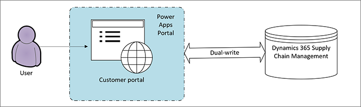

Install, set up, and update the Customer portal
[!include[rename-banner](~/includes/cc-data-platform-banner.md)]Licensing requirements
To implement the Customer portal, you must have the following licenses:
- Power Apps portals – This license is required to host the Customer portal. Portals are licensed based on usage. For more information, see the Power Apps portals licensing requirements.
- Dual-write – You must have the necessary licenses to enable dual-write for Supply Chain Management tables. For more information, see the system requirements for dual-write (This is an external linThis link was changed due to HTMLfromRepoGenerator).
Dependencies on dual-write and Power Apps portals
The Customer portal depends on Power Apps portals and dual-write, as shown in the following illustration.

Unlike other features from Supply Chain Management, the Customer portal template resides in Power Apps portals. Therefore, the Customer portal is limited by the functionality and capabilities that are provided by Power Apps portals and the tables in dual-write.
Required setup to enable the Customer portal
After you've made sure that you have the required licenses, you can set up dual-write as described in the dual-write initial synchronization instructions.
Be sure to enable the following table mappings in dual-write:
- Sales Order Header
- Sales Order Details
- Accounts
- Contacts
- Products
After this setup is completed, you can provision the Customer portal template.
Provision the Customer portal
Before you begin, make sure that you've already completed the required setup. Then follow these steps to provision the Customer portal.
- Go to make.powerapps.com.
- Make sure that you're using the environment where you enabled dual-write.
- On the Create tab, scroll down to the Start from template section, and select the template that is named Customer Portal.
- Follow the on-screen instructions.
After provisioning is completed, you can access the Customer portal in the Your apps section of the Home page.
Note
If the dual-write solution isn't installed in the environment that you're working in, you will receive an error message, and the Customer portal won't be provisioned.
Update the Customer portal
More functionality might be added to the Customer portal later. Any changes that Microsoft makes to the underlying solution components will automatically appear in your environment. However, the website that is provisioned in your environment won't automatically reflect changes that are made to the configuration data. You will have to manually apply those changes by getting the code from the new template and merging it with the provisioned website.
Additional resources
To learn how you can set up and customize the Customer portal, you should start by reviewing the following documentation for the underlying technologies:
- Power Apps portals documentation
- Dual-write documentation (This is an external linThis link was changed due to HTMLfromRepoGenerator)
To effectively manage your portals, you must understand the Power Apps portals and Microsoft Dataverse lifecycle. For more information, see the following resources: